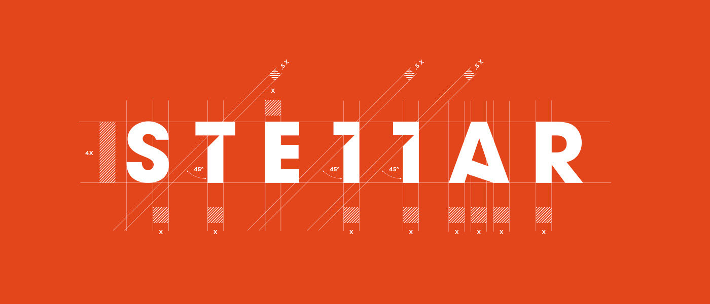
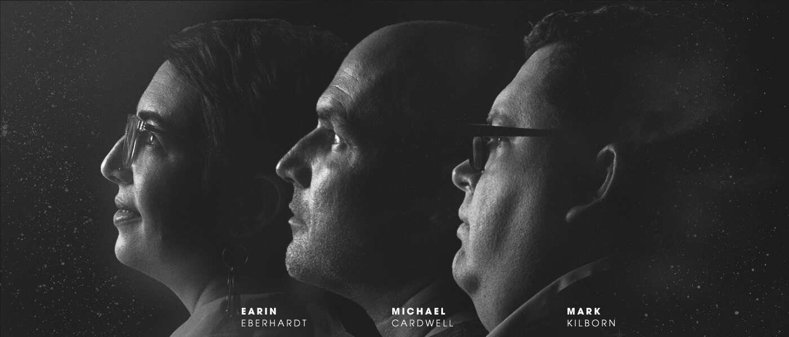
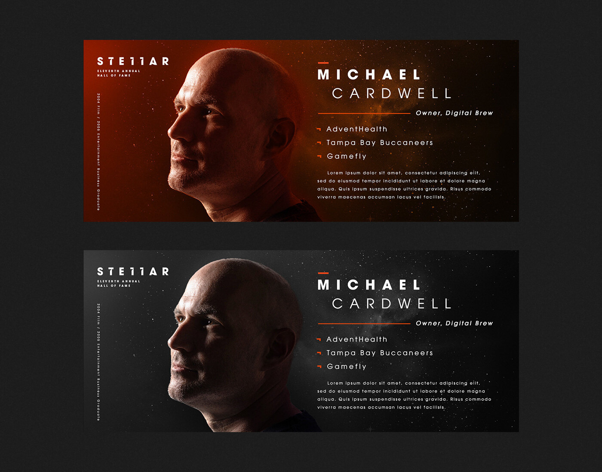
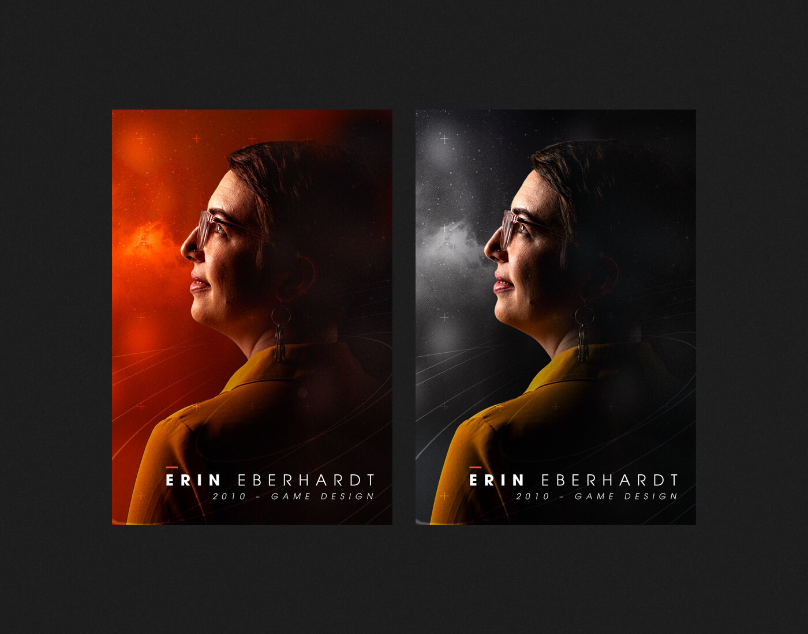
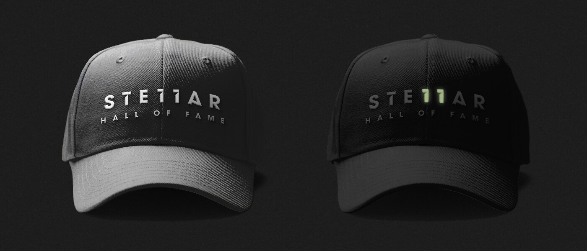
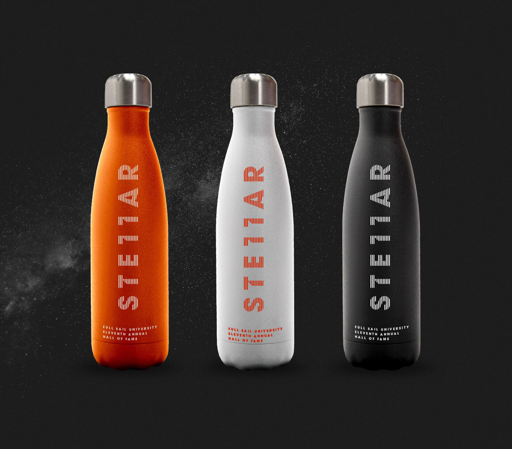

Full Sail UniversityHall of Fame 11Unproduced concept
Stellar
A branding direction for the 11th Hall of Fame that wasn’t chosen. Stellar as in outer space: the inductees shown as stars.
- My role
- Lead designer
- Scope
- Logo, inductee portraits, banners, merchandise
- Year
- 2022

01The mark
The 11 is built into the word. The two Ls in STELLAR are drawn as the number 11, so the edition number is hiding in the logo.

02Inductees in space
Each inductee shown in profile against a starfield.



03Merchandise
A glow-in-the-dark hat. In the dark, the 11 glows out of the Stellar logo.

